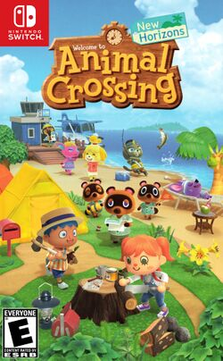

O Nintendo Switch é um console de videogame híbrido da oitava geração produzido pela Nintendo. Durante seu desenvolvimento, ele foi chamado de Nintendo NX. O console foi revelado em 2016 e lançado oficialmente no dia 3 de março de 2017. O Switch é o primeiro console híbrido da história, permitindo que os jogadores usem-no tanto como um console de mesa quanto como um dispositivo portátil.
O Nintendo Switch, inicialmente conhecido pelo codinome "NX", foi anunciado pela Nintendo em março de 2015. O console foi oficialmente revelado ao público em outubro de 2016 e lançado em 3 de março de 2017. O Switch é um console híbrido, o que significa que pode ser usado tanto como um console de mesa quanto como um dispositivo portátil. Essa versatilidade foi uma das principais razões para seu sucesso.
O Switch consiste em uma tela sensível ao toque de 6,2 polegadas com resolução de 1280x720 pixels, que pode ser encaixada em uma base para se conectar à TV. Ele vem com dois controles destacáveis chamados Joy-Con, que podem ser usados individualmente ou acoplados a um grip para formar um controle tradicional. O console também suporta multiplayer local e online, e os jogos estão disponíveis tanto em cartuchos físicos quanto por meio de download digital na Nintendo eShop.
Desde o lançamento do modelo original, a Nintendo lançou duas variantes do Switch:
O Nintendo Switch foi um grande sucesso comercial. Em janeiro de 2022, ele se tornou o quinto console mais vendido da história, superando o PlayStation 1 e o Wii. Até março de 2024, o Switch vendeu mais de 141 milhões de unidades em todo o mundo.
O Switch possui uma vasta biblioteca de jogos, incluindo muitos títulos exclusivos e populares. Alguns dos jogos mais notáveis incluem:
|  |
|